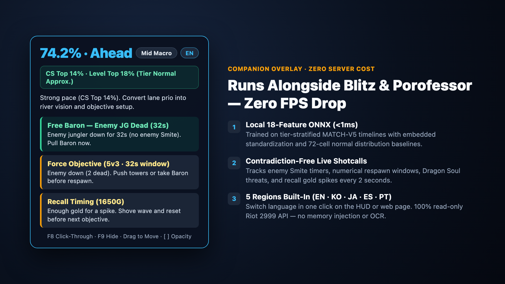

Real-Time AI Coach That Changes Your In-Game Decisions
Works across Ranked, Normal, ARAM, and Practice Tool. Runs locally on CPU via ONNX (<1ms) alongside Blitz or Porofessor — zero ads, zero FPS drops, 100% Riot policy compliant.

Download Center
Windows 10 / 11 (.zip)
Standalone portable package with bundled 18-feature ONNX model & 5 languages. Unzip and run — no Python required.
macOS (.app.zip)
Native macOS app bundle with local ONNX runtime, click-through overlay, and automatic locale detection.
How to Apply (4 Simple Steps)
Unzip & Launch
Extract the zip and launch LoLPacemaker. On first run (unsigned open-source app), click More info → Run anyway on Windows, or Right-click → Open on macOS.
Borderless Window
In League of Legends Video Settings, set Window Mode to Borderless so the transparent HUD floats cleanly over the game.
Auto-Connect (All Modes)
Start Ranked, Normal, ARAM, or Practice Tool. The HUD automatically detects your mode and updates live every 2 seconds.
Companion Controls
Drag anywhere to avoid Blitz/Porofessor. Press F8 for click-through, F9 to hide/show, [ / ] for opacity, or click the language badge to switch among 5 languages.
Troubleshooting & FAQ
The HUD does not appear on top of League of Legends.
Switch League's Video setting from Fullscreen to Borderless. Windows prevents any overlay from drawing above exclusive Fullscreen games.
Windows SmartScreen or macOS Gatekeeper shows a warning.
PACE MAKER is a free, zero-budget open-source project without a paid code-signing certificate. You can inspect 100% of the source code on GitHub and verify the SHA-256 hash before running.
It stays on "Waiting for LoL..." during a match.
The Riot local API (127.0.0.1:2999) opens only after the loading screen finishes and the match starts. If it still waits, check that local firewall rules do not block loopback port 2999.
Is this safe under Riot Games Third-Party Policy (Ranked & ARAM)?
Yes. It reads only Riot's official local scoreboard/events API (127.0.0.1:2999) for player improvement coaching — zero memory reading, zero OCR, zero hidden enemy timers or wards.
Customer Support & Feedback
Bug Reports & Feature Requests
Found a bug or want a new language/call? Open an issue directly on GitHub.
Community & Updates
Follow updates, share match feedback, and vote on upcoming coaching features on Reddit.
Riot Policy Safe & Security Guaranteed
Read-only access to Riot's official local Live Client Data API (127.0.0.1:2999). No memory injection, no OCR, no hidden enemy wards/cooldowns, and zero gameplay data leaves your PC.